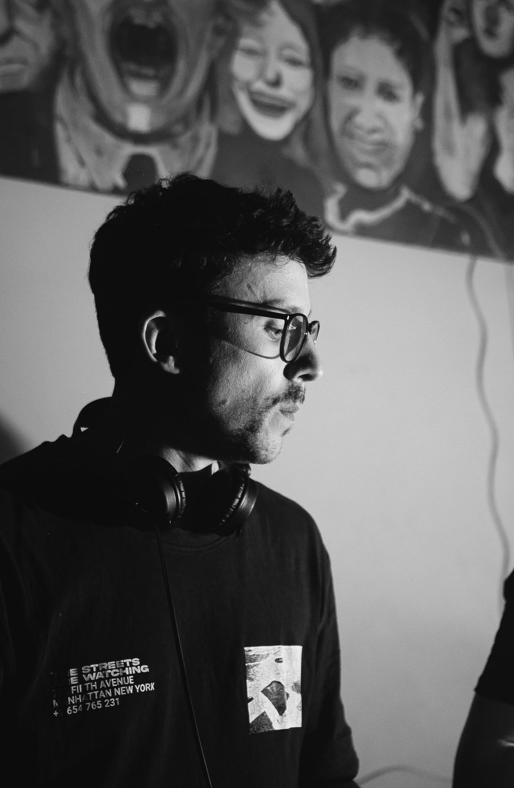
BIO
Alberto Serrano, known artistically as Biorc, is a DJ and producer based in Madrid and the founder of Fissura Records.
Biorc’s music has been played in legendary clubs and supported by renowned artists in the scene, establishing him as a notable emerging figure within the underground techno circuit. His music, released in both physical and digital formats, reflects a meticulous approach to sound design and has been published on prestigious labels as well as on his own imprint.
Focusing on hypnotic techno sets, Biorc blends the mental with the physical through long mixes and precise equalization. His artistic vision, combined with strong technical expertise and an unwavering dedication to the genre, positions him as a compelling voice in the evolving narrative of underground electronic music.
Latest Releases
2025 / 2026
-
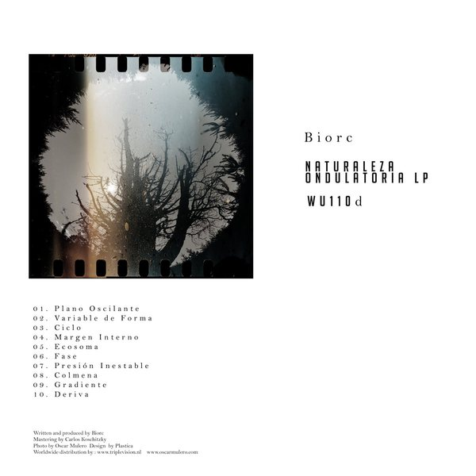
Naturaleza Ondulatoria LP Warm Up (opens in a new tab) -
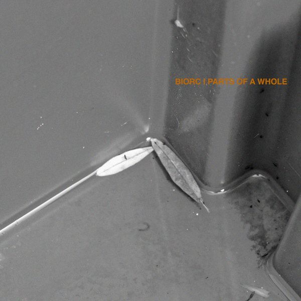
Parts Of A Whole Faut Section (opens in a new tab) - Vestiges of The Unseen Loopaina Records (opens in a new tab)
-
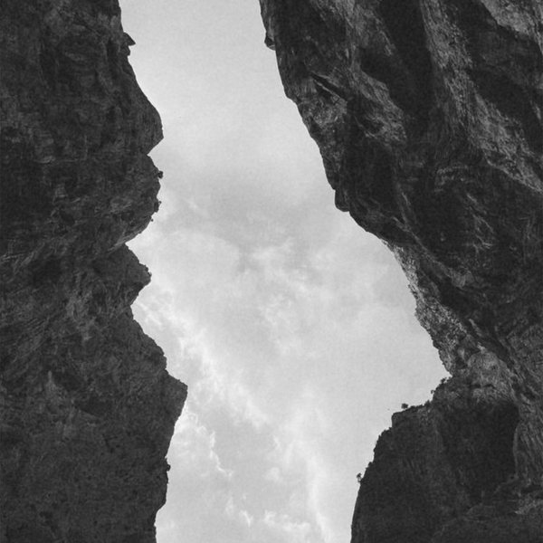
La Travesía LP Fissura Records (opens in a new tab) -
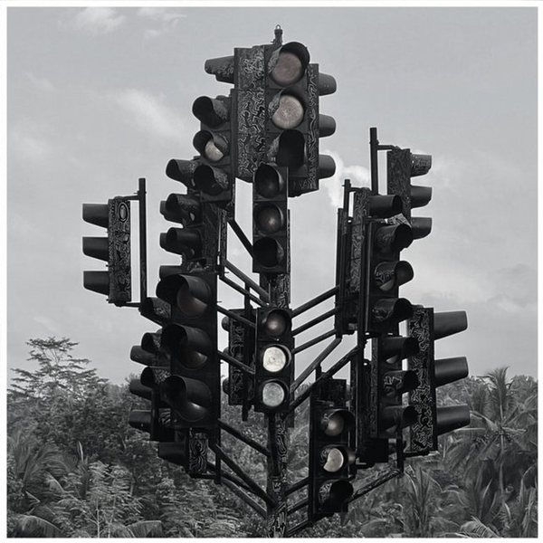
Divided Lines w/ Lakej Loopaina Records (opens in a new tab) -
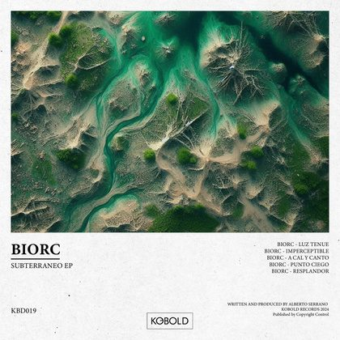
Subterraneo EP Kobold records (opens in a new tab) -
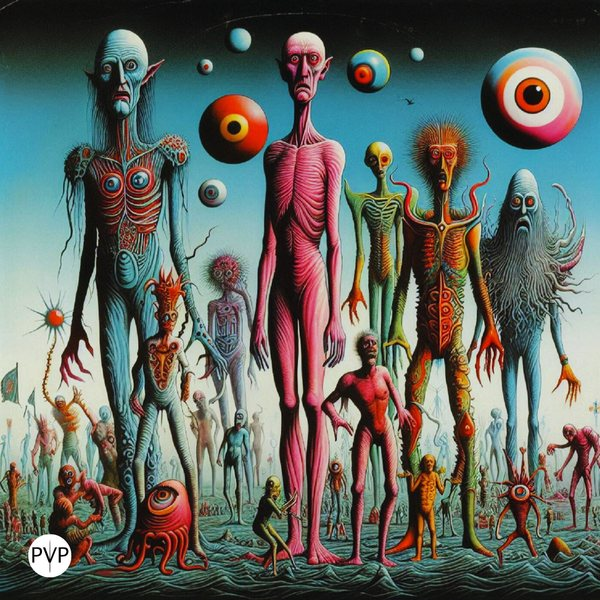
Lugares Vacíos EP PVP records (opens in a new tab) -
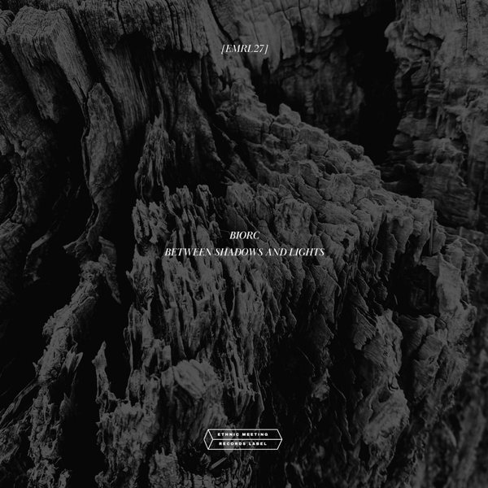
Between Shadows and Lights LP Ethnic Meeting recs (opens in a new tab) -
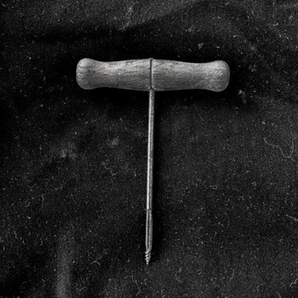
Caminos Inciertos EP Incense records (opens in a new tab)
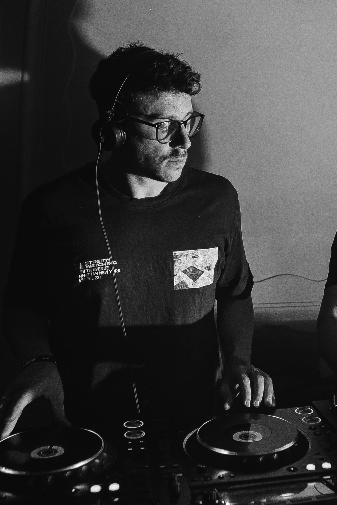
Events & Venues
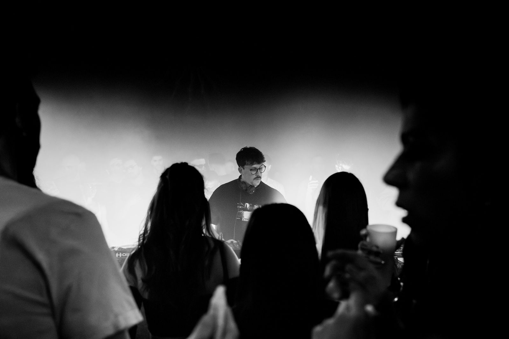
- Oscilo Concept Festival Granada
- Crow Techno Club
- Loopaina Showcase w/ Lakej
- Undernight_21
- CODE by Fabrik 21 aniv.
- Aracne Techno w
- Mork X Sinapsis
- Mork Club X BCCO Madrid
- Rastro Live Set
- Pulser
- Industrial Madness vol.3
- Minitel
- Caja Rural Granada
- LAB Madrid
- Bridge_48 BCN
- MUV
- FABRIK
- Specka
- ART Madrid
- Studio 76
- Rastro
- X Private Club
- Hangar 48
- Republik Club
Podcasts
-
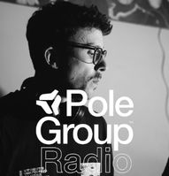
PoleGroup Radio
-
Oscilo Concept
-
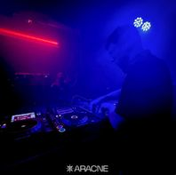
Aracne Techno
-
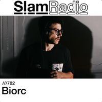
Slam Radio
-
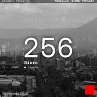
Medellin Techno
-
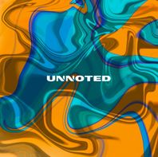
Unnoted
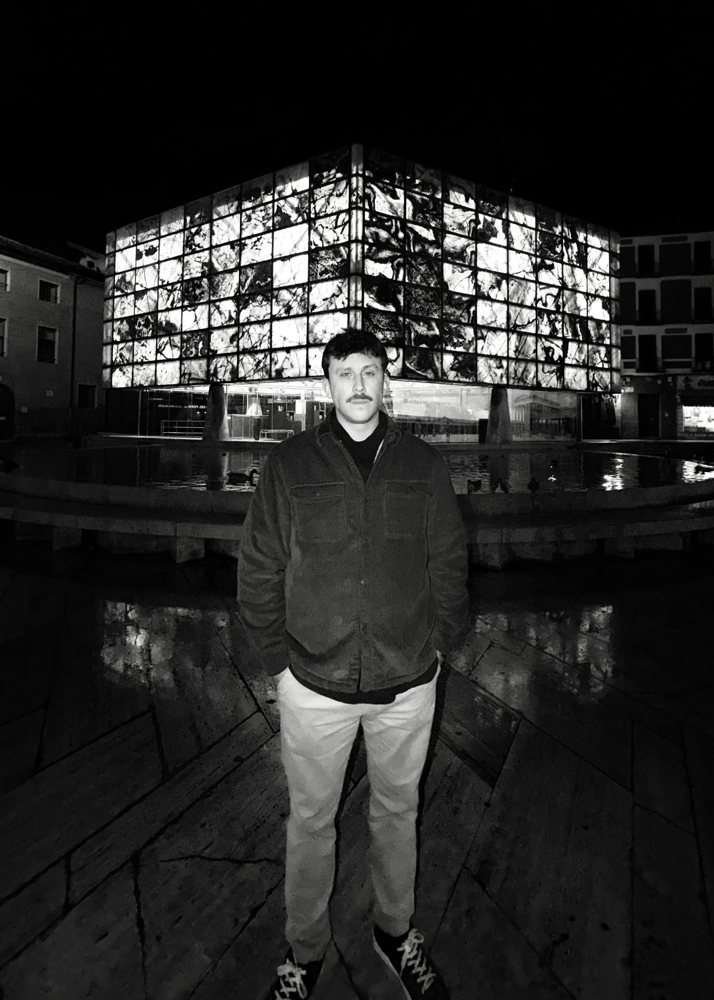
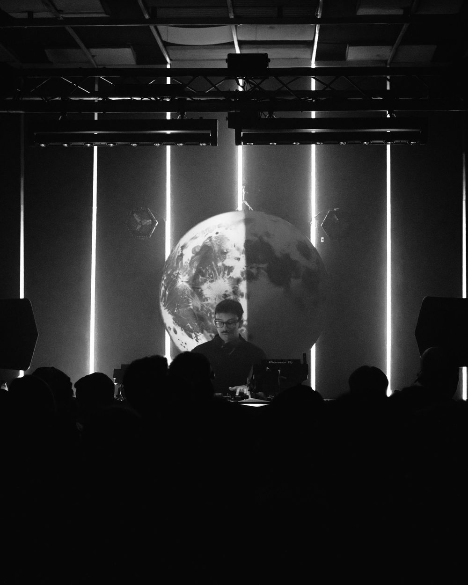
Technical Rider
MAIN OPTION
- 3x CDJ 2000 NXS or higher
- 1x XONE: 96 or 92 mixer
OTHERS
- Pioneer XDJ 1000
- Pioneer XDJ 700
- Pioneer CDJ 3000
- Pioneer CDJ 900
- Pioneer Mixers (800, 900, v10)